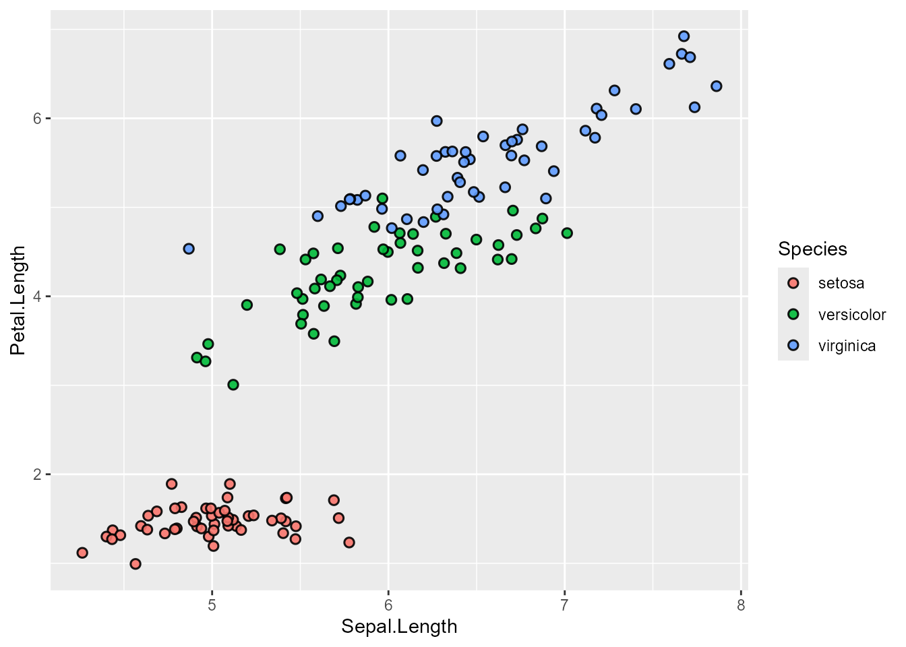
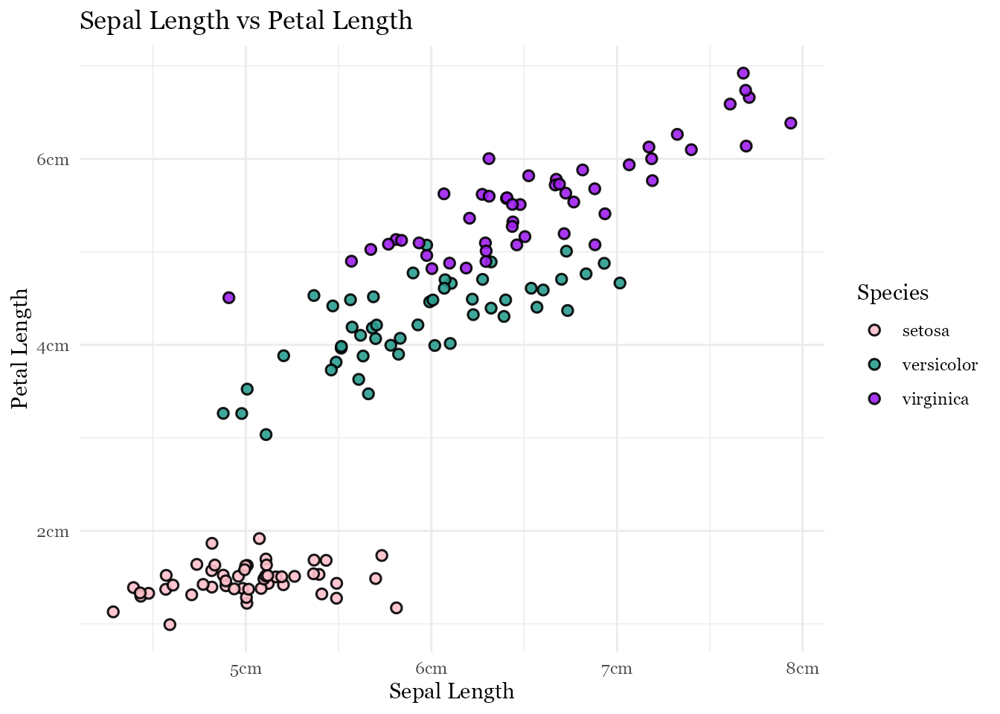

ggplot(iris, aes(x = Sepal.Length, y = Petal.Length)) +
geom_point()
本記事は、ggplot入門シリーズ（全5回）の一部です。
他の回はこちらからご覧いただけます：
前回の記事では、どのグラフを使えばよいのかについて説明しました。
今回は、作ったグラフをより見やすくする方法を紹介します。
データ可視化では、単にグラフを作るだけではなく、読みやすく、伝わりやすいデザインにすることがとても重要です。
まずはシンプルな散布図を作ってみます。
今回も、これまでのブログで使ってきたirisデータを使います。
ggplot(iris, aes(x = Sepal.Length, y = Petal.Length)) +
geom_point()
このグラフでもデータの関係を見ることはできますが、少しシンプルすぎて情報が少ないかもしれません。
そこで、いくつかの要素を追加して見やすくカスタマイズしていきます。
まず、点の見た目を少し変えてみます。
ggplot(iris, aes(x = Sepal.Length, y = Petal.Length)) +
geom_jitter(aes(fill = Species),
shape = 21,
color = "black",
size = 2,
stroke = 0.8,
alpha = 0.9)
ここでは次のような設定をしています。
| 引数 | 説明 |
|---|---|
shape |
点の形 |
color |
点の枠線の色 |
fill |
点の塗りつぶしの色 |
size |
点の大きさ |
stroke |
枠線の太さ |
alpha |
透明度 |
geom_jitter() はgeom_point()と似ていますが、点が少しずつずれて表示されるので、重なって見えにくくなるのを防ぐことができます。
次に、色を自分で指定してみます。
scale_fill_manual(values = c(
"setosa" = "pink",
"versicolor" = "#2A9D8F",
"virginica" = "purple"
))scale_fill_manual() を使うと、カテゴリーごとの色を自由に設定できます。
この例ではSpeciesの3種類のiris（アヤメ）それぞれに色を割り当てています。
次に、軸の表示を少し分かりやすくします。
scale_x_continuous(labels = function(x) paste0(x, "cm")) +
scale_y_continuous(labels = function(x) paste0(x, "cm"))function(x) は、軸の数値を加工するための小さな関数です。
ここでは paste0(x, "cm") を使って、軸の値に "cm" を追加しています。
そのため、例えば 4 は "4cm" のように表示されます。
グラフにはタイトルを付けておくと、何を表しているのかが分かりやすくなります。
labs(title = "Sepal Length vs Petal Length",
x = "Sepal Length",
y = "Petal Length")labs() を使うと、
x=Sepal Lengthなど）などを追加できます。
最後に、グラフ全体のデザインを変更します。
theme_minimal(base_size = 10)theme_minimal() は、背景をシンプルにしたテーマです。
他にもテーマの種類はたくさんあります。
| テーマ | 説明 | ggplot |
|---|---|---|
| minimal | シンプルで背景が白い | theme_minimal() |
| classic | 昔ながらのRのグラフに近い | theme_classic() |
| bw | 白黒でグリッド線あり | theme_bw() |
| light | 薄いグリッド線で読みやすい | theme_light() |
| dark | 背景が黒い | theme_dark() |
| gray（default） | ggplotのデフォルトテーマ | theme_gray() |
| void | 軸や背景をすべて消す | theme_void() |
さらにカスタムのテーマでフォントも変更できます。
theme(text = element_text(family = "Georgia"))family = "Georgia" はフォントを指定しています。
ただし、環境によってはこのフォントが入っていない場合もあるので、その場合は別のフォントが表示されることがあります。
ここまでの設定をすべてまとめると、次のようになります。
ggplot(iris, aes(x=Sepal.Length, y=Petal.Length)) +
geom_jitter(aes(fill = Species),
shape = 21,
color = "black",
size = 2,
stroke = 0.8, #border thickness
alpha = 0.9) + #transparency
scale_fill_manual(values = c("setosa" = "pink",
"versicolor" = "#2A9D8F",
"virginica" = "purple")) +
scale_x_continuous(labels = function(x) paste0(x, "cm")) +
scale_y_continuous(labels = function(x) paste0(x, "cm")) +
labs(title = "Sepal Length vs Petal Length",
x = "Sepal Length",
y = "Petal Length") +
theme_minimal(base_size = 11) +
theme(
text = element_text(family = "Georgia")
)
同じデータでも、少し設定を変えるだけでかなり見やすいグラフになります。
次の記事では、ggplotの便利テクニックを紹介します。
ggiraphなどのパッケージを使って、
インタラクティブなグラフの作り方
カーソルを合わせたときに情報を表示する方法
ggplotをさらに使いやすくする工夫
などを見ていく予定です。
これまで学んできたggplotの基本に、少し発展的な機能を加えることで、より伝わりやすいグラフを作れるようになります。
Rを使ったデータ分析や、再現可能なワークフローの構築についてサポートが必要な方は、お気軽にご連絡ください。
reinasdatastudio@gmail.com
@reinas_data.studio